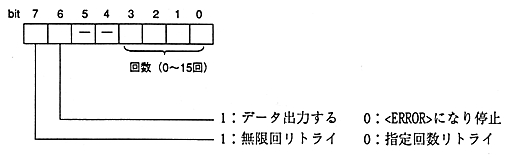

Title | Function | Function Name [SR] | No |
(5) Retry count∙ Specify the number of read retries for the same sector when an error occurs during CD-ROM decoding.
setting value | description | ||
|---|---|---|---|
00H | Data output stopped without retrying (〈ERROR〉) …… Initial value | ||
01H to 0FH * | Retry the specified number of times, and stop outputting data if an error occurs (〈ERROR〉) | ||
40H | Output data without retrying. | ||
41H-4FH * | Retry the specified number of times and output data even if an error | ||
80H |
* Specify the number of times in the lower 4 bits.

(A) Applies to Mode1 or Form1 sectors. (B) When initialization flag bit3 = 1 (Form2 read retry), it is also applied to Form2. (C) When bit 2 = 1 (Mode2 subheader is not recognized) of the initialization flag, it is also applied to Mode2.(6) Tray open / close and drive command
When not resetting the software, the following tray open / close operation is performed as a drive command. (CD (Same for playback, seek of playback position, and scan playback) (A) In the 〈OPEN〉 state, close the tray. ・ In case of automatic type (front loading): CD block automatically closes the tray. ・ For manual type (top loading): 〈BUSY〉 state until manually closed. (B) Open the tray when in the 〈NODISC〉 state. (See CDC_CdOpen function for details)